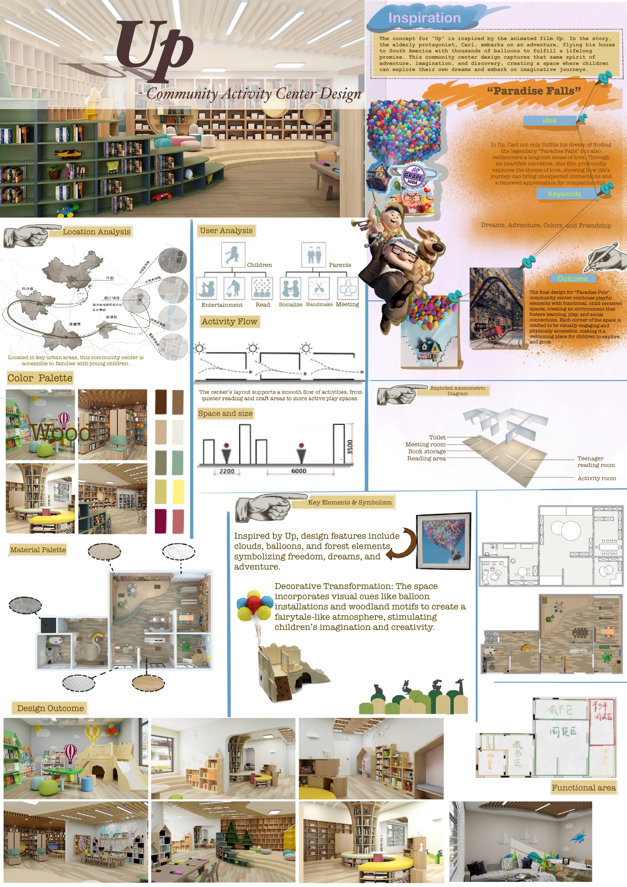
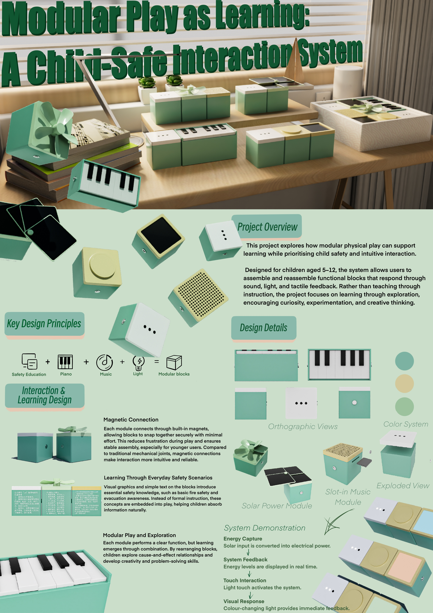
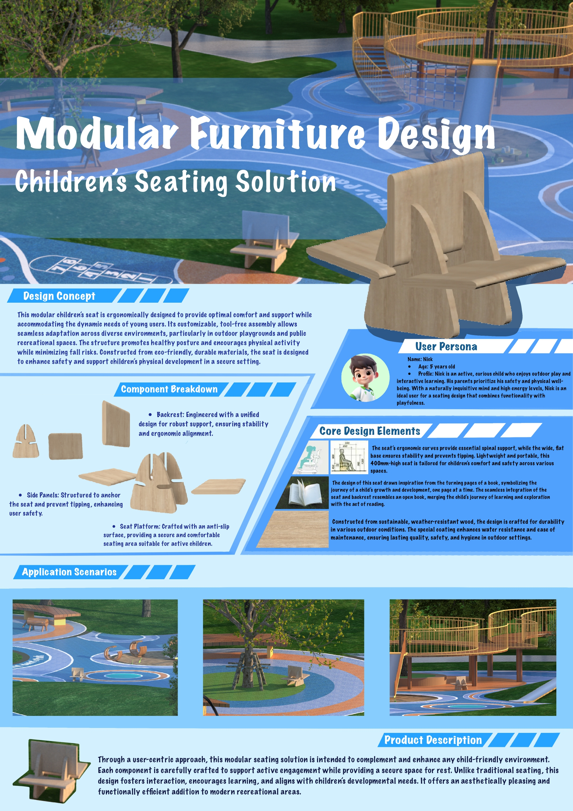
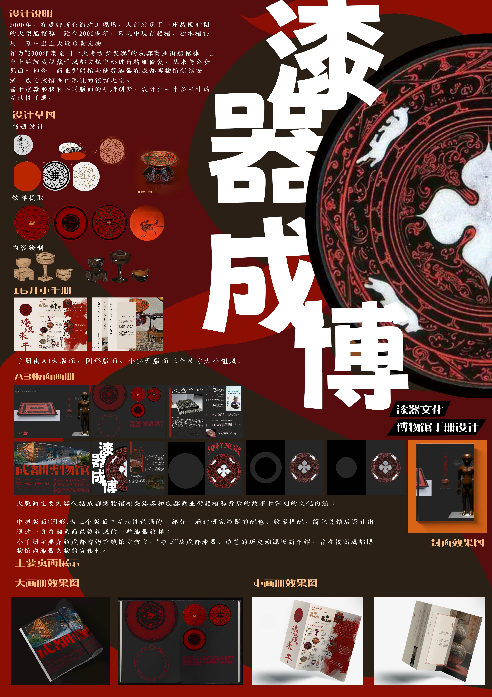

Almond Blossom | Bachelor Graduate Exhibition
Interior & Furniture DesignA furniture collection inspired by Vincent van Gogh’s Almond Blossom, exploring the intersection of classical post-impressionist art and contemporary functional living.

Up | Community Activity Center Design
Spatial & Narrative DesignA transformative child-centric community space inspired by the Pixar film Up, translating themes of adventure, friendship, and discovery into a physical landscape that stimulates imaginative play and social connection.

MODUCATE | Modular Play-as-Learning System
Social Innovation & Product DesignA multi-sensory modular system designed to empower underprivileged children through tactile safety education, developed through field research and rigorous market benchmarking.

Modular Furniture | Children's Seating Solution
Product Design & FabricationAn ergonomic, tool-free assembly seating system designed for outdoor recreational spaces, bridging the gap between digital parametric design and physical timber fabrication.

Lacquerware Museum | Cultural Narrative Design
Visual Communication & LayoutA multi-dimensional editorial system designed for the Chengdu Museum lacquerware collection, deconstructing 2,000-year-old archaeological motifs into a modern interactive brochure.
Focus: Grid Systems, Typographic Hierarchy, Print Production
Tools: InDesign, Illustrator, Photoshop

Morning C | Boutique Cafe Interior
Commercial Space & EngineeringA concept-to-detail commercial interior project blending American industrial aesthetics with highly optimized operational workflows.
Fabrication Logic: Construction Documentation, Lighting Design
Tools: AutoCAD, 3ds Max, V-Ray, Photoshop